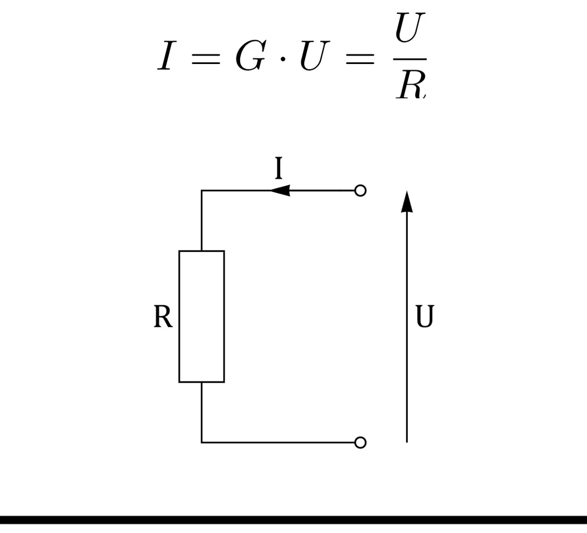
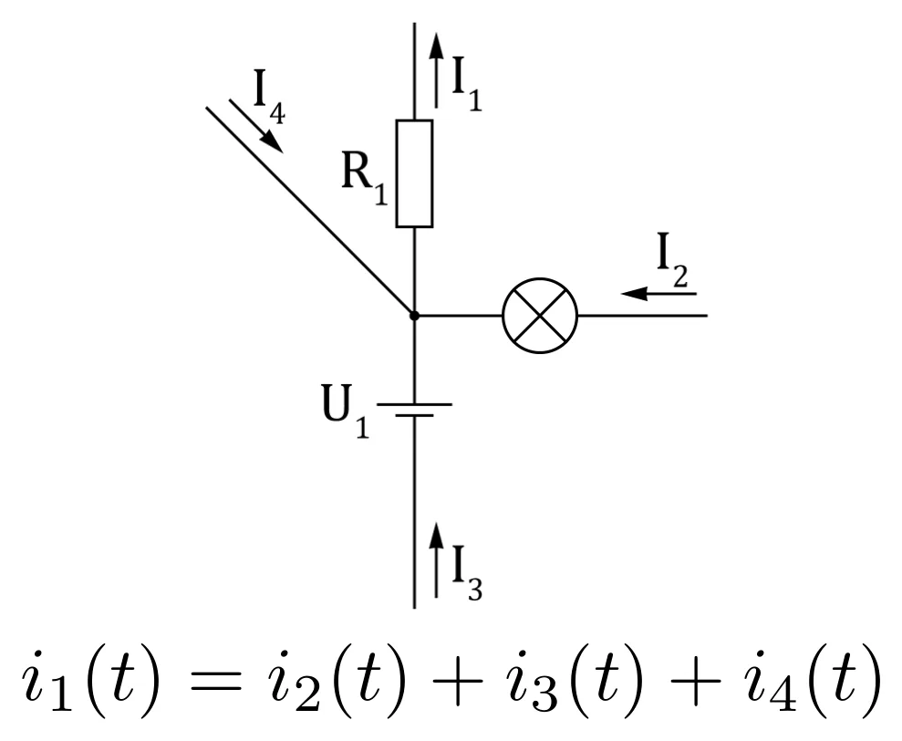
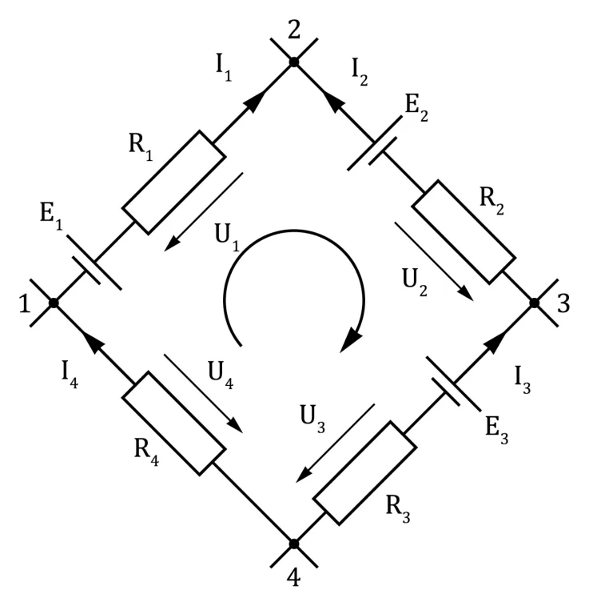
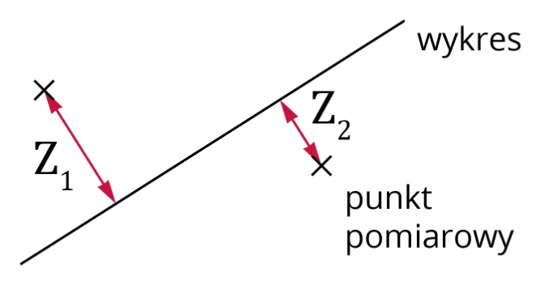

What this is for
The SYC course has three parts: electronics (lectures 1–5), digital circuits (6–10) and microcontrollers and computer architecture (11–15). Labs run one week behind the lectures, so what you read here you do "by hand" in class a week later — see Lab 2. The grading rules are on a separate page: Passing the course.
This lecture has two halves. The first is a quick physics refresher (voltage, current, two or three laws). The second is metrology, the science of measuring — and that is what you need in the very next class.
Potential and voltage
In plain words
Picture mountains. Every place has its height — that is the potential. Water flows on its own only when there is a height difference between two places — that is the voltage. A single place has no "voltage" of its own; voltage is always between two points.
Formally, the electric potential φA at point A is the work W needed to move a charge q from that point to infinity, divided by the charge:
The lecturer himself says the formula is not practical — "nobody is going to run to infinity with an electron". What matters is this: the voltage UAB is the potential difference between points A and B:
- Voltage is measured in volts [V].
- In diagrams voltage is drawn as an arrow; the arrowhead points to the higher potential (the "+" side).
Ground, the 0 V point
Since only the difference matters, it is convenient to pick one point of the circuit and say: "this is 0 V". That point is called ground (GND, symbol ⊥; in Polish masa). All other potentials in the circuit are given relative to ground.
- Nobody checks what the "true" potential of ground is — we simply agree that it is 0 V.
- Ground is usually the negative terminal of the power supply.
- Metal parts of devices (the case, the shield of a BNC cable) are normally connected to ground.
In plain words
It is like "sea level" on a map. Nobody measures a mountain from the centre of the Earth — we measure from a level everybody agreed to call zero. In a car, ground is the whole metal body connected to the battery's minus.
Ground is not the same as earth
Earth (the pin in a wall socket) connects the case to the soil for safety. Ground is just the 0 V reference point of a circuit. They are often connected together, but they are two different ideas.
Electric current
Current is an ordered movement of electric charges. It flows when there is a voltage between two points and a path to flow through. Current is measured in amperes [A].
- In wires it is the electrons (negative charge) that move — physically from "−" to "+".
- By convention (historical, from Faraday's time) we draw current from "+" to "−", like water falling downhill. It is only a convention.
- Positive charges can be, for example, ions (in batteries).
Ohm's law — the most important formula
The lecturer: "the one formula that is really worth remembering — without it you understand very little in electronics".
- I — current [A], U — voltage [V], R — resistance in ohms [Ω].
- G = 1/R — conductance in siemens [S] (the inverse of resistance).
- More voltage gives more current. More resistance gives less current.


In plain words
A water pipe: voltage is the pressure, current is the amount of water per second, and a resistor is a narrowing in the pipe. Push harder (bigger U) — more flows. Narrower pipe (bigger R) — less flows.
✚ My own example
I connect a 450 Ω resistor to a 9 V battery. Current: I = 9 V450 Ω = 0.02 A = 20 mA.
The other way round: I want 10 mA through an LED and 3 V must "stay" on the resistor. Required resistance: R = UI = 3 V0.01 A = 300 Ω.
Three forms of the same formula (learn to rearrange them in your head): I = U/R, U = I·R, R = U/I.
Kirchhoff's laws
First law (currents at a node)
A node is a place where several wires meet. The sum of currents flowing into a node equals the sum of currents flowing out. In other words: count incoming currents as plus and outgoing as minus, and the total is zero.


In plain words
A plumbing T-piece: as much water as went in must come out. Current has nowhere to "vanish" and nowhere to "appear" from.
Second law (voltages around a loop)
A loop is a closed path in a circuit. Walk all the way around a loop adding up every voltage (with signs — along your walking direction is plus, against it is minus) and you get zero.


Why: one point has only one potential. If you start at a point, walk around the loop and come back, you must be at the same "height" you started from.
From the lecture
The lecturer said the second law will be used rarely, while the first one will be used a lot.
Measurements: direct and indirect
- Direct measurement — you read the result straight from the instrument: voltage with a voltmeter, mass with scales, length with a tape.
- Indirect measurement — you measure something else and calculate what you need. Examples from the lecture: current calculated from voltage and resistance (I = U/R); distance from the travel time of an ultrasound pulse (distance = speed · time).
Every measurement has an error
A number alone is not enough. You also have to say how much it can be trusted — that is the measurement uncertainty. In the labs we simplify: uncertainty = measurement error.
| Type of error | What it is | Example from the lecture | What to do |
|---|---|---|---|
| Systematic | always the same; caused by a flaw of the instrument or method | a "100 cm" tape that is really 101 cm long | can be corrected (here: multiply the result by 100/101) |
| Random | slightly different every time (temperature, noise…) | repeated readings differ in the last digit | cannot be removed; can be analysed statistically |
| Gross | a plain mistake | measuring an amplifier that was never powered on | reject it and measure again |
Absolute and relative error
- x — what the instrument showed; x0 — the true value (in practice unknown, so the measured value is used in the denominator).
- The absolute error Δx has the same unit as the measurement (volts, amperes, ohms…).
- The relative error δ is in percent and says "how much error there is in the measurement". It shows the quality of the measurement.
Example from the lab instructions
I am really 183 cm tall. A friend measured 180 cm with a ruler. Absolute error: 180 − 183 = −3 cm. Relative error: 3 / 183 = 0.0164 = 1.64%.
We write a result as x ± Δx, meaning "the true value lies somewhere between x − Δx and x + Δx".
Analog instrument (with a needle)
An analog instrument has a class (kl) — a number describing its quality — and a range (Z), the largest value that can be measured at the current setting.
Notice that the measured value is not in the formula. The absolute error is the same everywhere on the scale.
Example from the lecture (class 2, range 20 V)
Δx = 2 · 20100 = 0.4 V — everywhere on the scale.
| Reading | Absolute error | Relative error |
|---|---|---|
| 20 V | 0.4 V | 0.4 / 20 = 2% |
| 10 V | 0.4 V | 0.4 / 10 = 4% |
| 4 V | 0.4 V | 0.4 / 4 = 10% |
The closer to zero, the worse. The smallest possible relative error is at the end of the range and equals the class of the instrument.
On top of that comes the reading error: the needle (or the trace on an oscilloscope) has a thickness, you look at an angle (parallax) — you cannot read it perfectly. Usually something like 0.1 of a division is assumed. This error is added to the class error.
Digital instrument (multimeter)
Here the error has two parts:
- a% — a percentage of the reading X (written in manuals as e.g.
0.8%, sometimes%rdg); - n — a number of "digits" (written
2d,2dgt); - Δr — the resolution: the smallest change visible on the display, i.e. the value of the last digit.
The manual notation ±(0.1% + 4dgt) reads: "take 0.1% of the reading and add 4 times the value of the last digit".
The resolution depends on the range — look where the decimal point is. For a four-digit meter:
| Range | What the reading looks like | Resolution Δr |
|---|---|---|
| 2 V | 1.427 | 0.001 V |
| 20 V | 1.43 | 0.01 V |
| 200 V | 1.4 | 0.1 V |
Example from the lecture: an AA battery, accuracy ±(1% + 2d)
| Range | Reading | 1% of reading | 2 · Δr | Error Δ | Relative error |
|---|---|---|---|---|---|
| 2 V | 1.427 V | 0.014 | 0.002 | 0.016 V | 1.1% |
| 20 V | 1.43 V | 0.014 | 0.02 | 0.03 V | 2.4% |
| 200 V | 1.4 V | 0.014 | 0.2 | 0.2 V | 15% |
✚ I worked out the total and percentage columns myself — the lecture only showed the components. The conclusion is the same: same battery, same meter, and the error differs more than tenfold.
Choosing the range — the point of the first labs
Two rules from the lecture
- A measurement is more accurate the closer the measured value is to the end of the range.
- A digital measurement is more accurate the more digits you see in the result.
In practice: pick the smallest range on which the result still fits. For 5 V with ranges 2 / 20 / 200 V that is 20 V. For an analog meter: the needle should deflect as far as possible.
From the lecture
From the lecture: if you pick up a meter and see it has many digits (5–6), you can expect a good-quality instrument; few digits — probably a poor one.
Tip from the site author
If you do not know what voltage to expect, start from the largest range and go down. When the display shows just a "1" on the left, the range is too small — go one step back up. (The manual of the lab meter gives the same advice.)
Error of an indirect measurement — the max–min method
We calculate something from a formula and each number in the formula has its own error. The method is simple: compute the worst cases.
For I = U/R:
So: the largest current occurs when the voltage is "on the plus side" and the resistance "on the minus side"; the smallest — the opposite. The result is the middle, and the error is half the spread.
✚ My own example
Measured: U = 10.0 ± 0.2 V and R = 100 ± 5 Ω.
- Imin = 9.8105 = 0.0933 A
- Imax = 10.295 = 0.1074 A
- Î = 0.1074 + 0.09332 = 0.1004 A, ΔI = 0.1074 − 0.09332 = 0.0070 A
Result: I = 0.100 ± 0.007 A (relative error 7%).
Rounding the result
- Round the error to at most two significant digits: 0.0084356 → 0.0084.
- The error cannot be smaller than the resolution of the instrument.
- Round the result to the same decimal place as the error.
- Round, do not truncate (digit 0–4 — down, 5–9 — up).
The final notation from the slide: X = 0.1264 ± 0.0084.
From the site author (not in the lecture)
On the slide the number 0.12645635… is written as 0.1264. Strict rounding to four places gives 0.1265 (the fifth digit is 5). In class follow rule 4 — the lecturer said explicitly "round, do not cut".
Graphs of measurements
- Choose the scale so that the curve fills almost the whole graph.
- Mark the measured points with crosses.
- Draw a smooth line (straight or curved) so that roughly the same number of points lies on each side of it.
- Do not connect the points with segments — a zig-zag "from point to point" is a mistake.


From the lecture
This will matter for filters (lab 4): the characteristic will have to be approximated by two straight lines.
Literature given in the lecture
- P. Horowitz, W. Hill — The Art of Electronics (Polish edition: Sztuka elektroniki, WKŁ 2012).
- B. Wilkinson — Układy cyfrowe (Digital System Design), WKŁ 2001 (the lecturer: "a very nice book").
- J. Doliński — Mikrokontrolery AVR w praktyce, BTC.
- A. Pawluczuk — Sztuka programowania mikrokontrolerów AVR — przykłady, BTC.
- R. Baranowski — Mikrokontrolery AVR ATmega w praktyce, BTC.